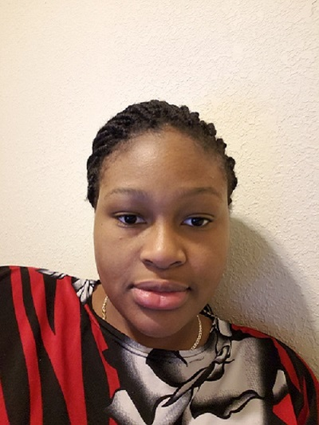

Ife Obasa
Ife Obasa is a 16-year old girl from Nigeria, in a state called Lagos.
She has lived there all her life and is now currently trying her best to adapt to the snow, since Nigeria is such a hot country.
She misses her family, her family's helpers and her dogs. Bentley and Cindy
She has three dogs but hates one of them, named Oscar.
A few months after she graduated from High School, she worked as an intern at an Education company,
she became an intern there and learnt about softwares like illustrator.
There she had co-workers who she misses and a boss who helped her in finding Fanshawe College.
She learnt how to manage social events and help maintain websites and look for errors in them.
She's very proud of that. She also hopes and prays to make her parents proud of her.
Mikka Azores, is a very fun-loving, social person, who is smart and fashionable. She comes from the Phillipines, and is 21 years old.
She loves the outdoors, hiking and nature. She also recently came out to her parents as bi, which is very hard to do and i respect her for that.
Overall, she is a very good friend and I'm so lucky to have met her.
Back to home